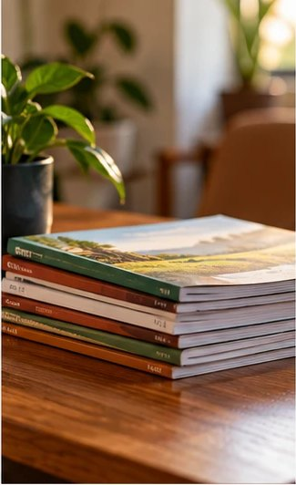

Accueil › Nous soutenir
Participer, si vous le souhaitez.
Le Ministère International Grâce et Vérité enseigne, publie et forme sans rien facturer. Ce qui rend cela possible se voit rarement.
Tout ce que vous lisez ici est gratuit, et le restera.
Les enseignements, les traités, les livres, les résumés du dimanche, les vidéos : rien n'est vendu, rien n'est réservé aux membres. C'est un choix, pas une contrainte. Un texte qui explique l'Écriture ne devrait pas dépendre de la capacité à payer.
Ce choix a un coût, modeste mais réel : l'impression des traités qu'on distribue dans les rues, le carburant des déplacements entre les huit assemblées, le matériel qui sert à filmer les prédications, l'hébergement de ce site.
Nous ne lançons pas d'appel de fonds et nous ne demandons rien à personne. Cette page existe simplement pour ceux qui voudraient participer et se demandent comment.
Quatre dépenses, les seules que le ministère engage pour ce qu'il publie.
Les traités sont distribués gratuitement. Chaque impression est un tirage payé d'avance.
Huit assemblées, d'Abidjan à Danané. Les visites pastorales se font en voiture, sur la route.
Un micro, une lumière, un trépied. De quoi rendre les enseignements audibles et regardables.
Le site, son nom de domaine, et la mise en ligne des textes retrouvés dans les archives.
La première ne coûte rien, et c'est celle qui fait le plus.
Envoyer un texte à quelqu'un pour qui il compterait. C'est ce qui fait le plus pour le ministère, et cela ne coûte rien.
Par mobile money. Le montant n'a aucune importance et n'est jamais rendu public.
Les coordonnées seront publiées ici dès que le ministère nous les aura transmises.Directement au responsable de votre assemblée, le dimanche.
Aucune somme n'est exigée pour recevoir un enseignement, entrer à un culte, obtenir une prière ou être accueilli dans une assemblée. Personne ne sera relancé, cité en exemple, ni classé selon ce qu'il donne. Si cette page vous met mal à l'aise, refermez-la : le reste du site vous est ouvert exactement de la même façon.